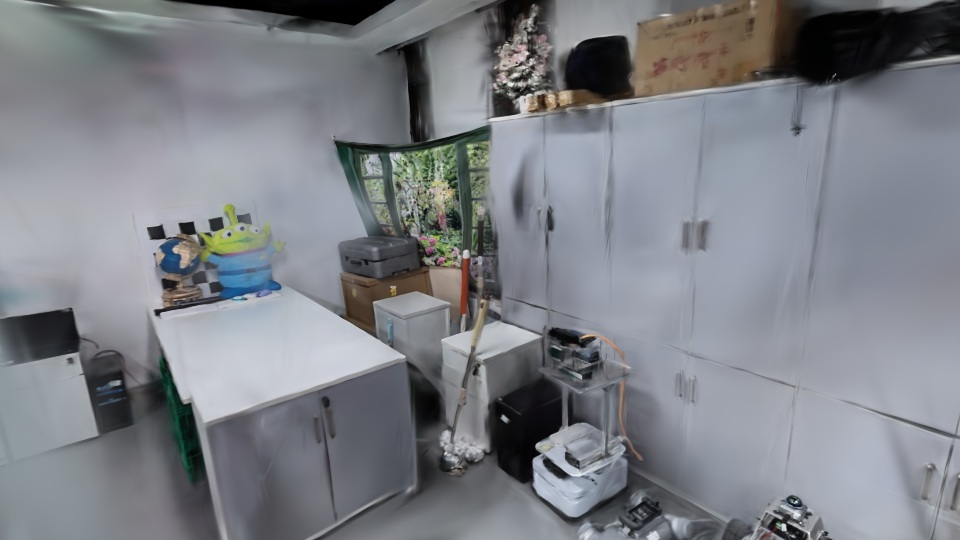

准备高斯渲染器…
可继续观看实际渲染的视频，或选择下方镜头查看对应视角。自由移动需要 WebGL2 和硬件加速。
视频导览左侧选择路线，播放实际高斯模型预渲染的 MP4。下方镜头卡片可以直接跳到对应时刻。
自由探索模型载入后，点击播放可沿路线移动；拖动场景会暂停并交还相机控制。轨道模式支持拖动旋转、右键平移、滚轮缩放。
WASD 漫游拖动转向，WASD 移动，Q / E 升降，Shift 加速。当前为自由飞行，未加入墙体和地面碰撞。
模型质量展示使用清理后的上传模型。删除了部分离群高斯，原始重建中的局部重影和模糊仍可能出现。